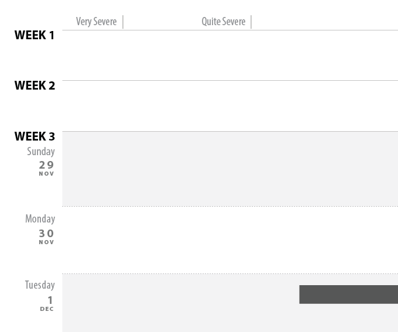
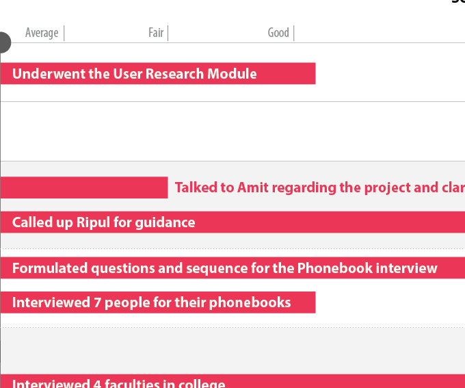

This infographic came out of a project that was spread over several weeks of research followed by documentation of the habits of people using contact management and instant messaging on their smartphones.

The aim of this was to study limitations and shortcomings in the project through a simple gantt chart.

Helping researchers remove bottlenecks from their research thinking.